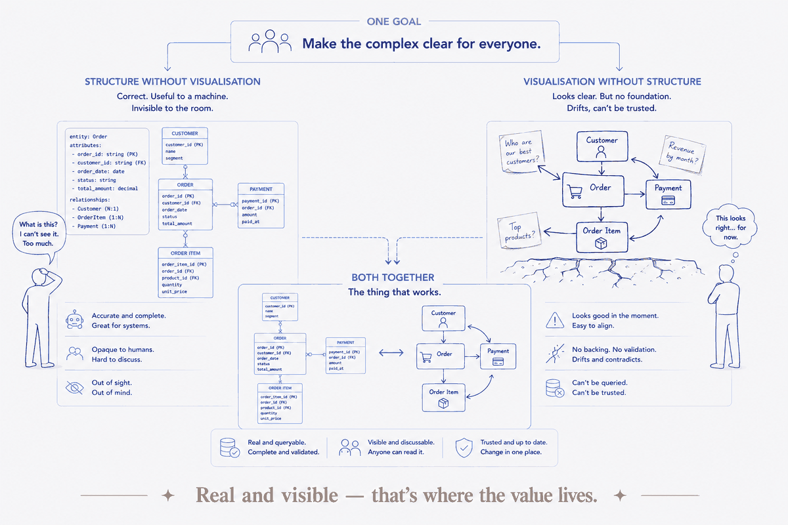
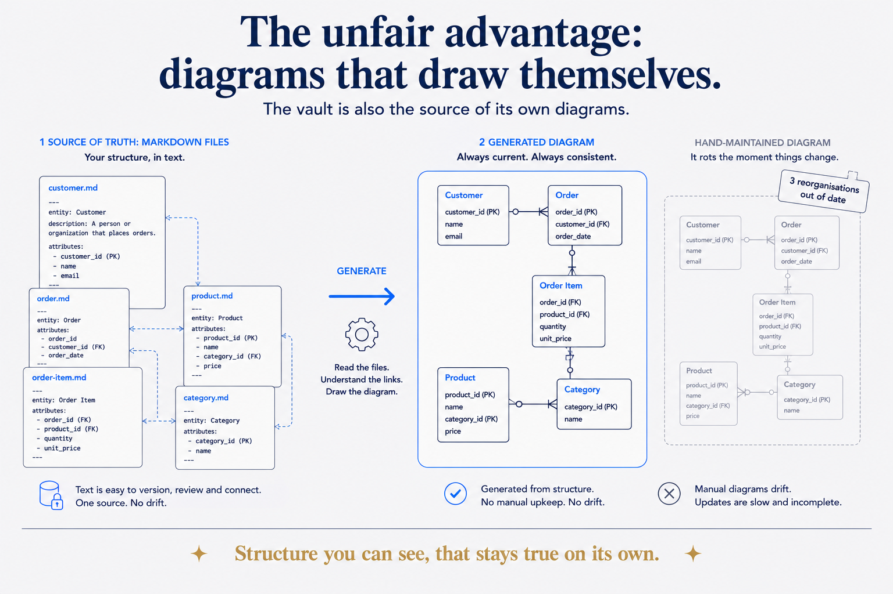

The half I keep leaving out
When I argue that your vault is a data model, or that a good structure is what makes AI useful, I'm describing something you mostly can't see. The entities, the relationships, the typed frontmatter, the layers — they're real, and they do real work, but they're invisible. You feel them when retrieval is fast and the AI stops guessing. You don't look at them.
And that's a gap, because the whole point of structure — the reason I've spent a career on it — is to make something complex clear to other people. A model that only its author can read has failed at the one thing modelling is for. So there's a second half of the craft I under-write, and it deserves its own name: visual thinking. Structure makes knowledge exist in a usable form; visual thinking makes it seen.
Data modelling was always visual
Here's what people outside the field miss: data modelling has always been a visual discipline. The core artefact of my trade is a diagram. An entity-relationship model is a picture — boxes for the things that matter, lines for how they relate, cardinality marks for the rules. When I sit with a business stakeholder who has never read a line of SQL and we agree on what a "customer" is and how it connects to an "order," we do it by drawing it together until the picture matches how they actually think.
That's not a side activity. The diagram is the model at the altitude where humans agree. Underneath it there's a logical layer and a technical layer, but the conceptual model — the one the business signs off on — is a drawing. Modelling and visualising were never two jobs. The structure and its picture are the same object seen at different depths.
Structure exists; visualisation reveals
So let me state the relationship plainly, because it's the spine of this piece:
Structure makes knowledge exist in a form you can work with. Visual thinking makes that structure visible enough to trust, question, and act on.
They're two halves of one goal — make the complex clear for everyone — and each is weak without the other:
- Structure without visualisation is a model only its author can navigate. Correct, useful to a machine, opaque to the room. The classic ivory-tower architecture: elegant on paper, invisible to the people who need it.
- Visualisation without structure is a pretty picture with nothing underneath. A hand-drawn diagram that looks clear but isn't backed by anything real drifts out of date the moment the world changes, and can't be queried, validated, or trusted.
Put them together and you get the thing I actually care about: a structure that's real (queryable, validated, machine-readable) and visible (a diagram anyone can read and challenge). That combination is rare, and it's where the value lives.

The unfair advantage: diagrams that draw themselves
Here's where the data-model framing pays a dividend the hand-drawing world can't easily match. Because the structure is real, machine-readable metadata — entities, links, typed fields — you don't have to draw the picture and then maintain it by hand. You can generate it.
A diagram derived from the structure is always correct, because it's read straight from the source, not transcribed. Change the underlying files and regenerate — the picture is current. No stale architecture diagram rotting in a folder, three reorganisations out of date. In my own vault this is exactly what happens: the frontmatter and links are the model, and a graph or a map drawn from them is a live view of my actual knowledge, not a snapshot someone forgot to update.
This is the visual counterpart to "the vault is the data model": the vault is also the source of its own diagrams. Structure you can see, that stays true on its own. That's the payoff I chase — making a complex thing visible and keeping it honest, automatically.

Two ways in, one goal
I've come to think of visual thinking as the counterpart to what I do, not an add-on. There's a whole world of people who arrive at "make the complex clear" from the visual side — hand-drawing, sketchnoting, visual facilitation, tools like Excalidraw that turn an Obsidian vault into a canvas, or the facilitators who get a room of executives to a shared picture of a contested strategy. They start with the drawing and work toward structure.
I start with the structure and work toward the drawing. Same mountain, opposite trailheads. The visual thinkers make the human half vivid; the data modellers make the machine half rigorous. Neither is complete alone — and the interesting work is exactly where they meet: a diagram that's both beautifully clear and backed by a real, validated model. I suspect that meeting point is under-explored precisely because few people live on both sides of it.
The honest limit
Two cautions, because a clean idea invites over-claiming.
First, a generated diagram is only as good as the structure beneath it — and only as readable as the human judgement applied on top. Auto-generating a graph of ten thousand notes gives you a hairball, not clarity; visual thinking is also the skill of what to leave out, which no generator decides for you. Structure enables the picture; taste makes it legible.
Second, not everything wants a diagram. Some knowledge is prose, some is a table, some is a single sentence. The goal isn't to visualise everything — it's to make the complex clear, and to know when a picture earns its place. Visual thinking includes the discipline of not drawing.
Why this belongs in Structure Beats Magic
The reason I'm writing this is that visual thinking isn't a neighbouring topic to my thesis — it's part of it, the half I'd been leaving implicit. The magic was never the model, and it was never the diagram either. It's the structure you give a thing — and then the picture that lets everyone else see the structure you built.
Do the modelling well and keep it honest, and you get a system an AI can act on. Make that same structure visible, and you get a system a human can trust. The two aren't a pipeline — model first, draw later. They're one craft with two faces: the structure that exists, and the picture that reveals it. That's the whole job, and it always was.